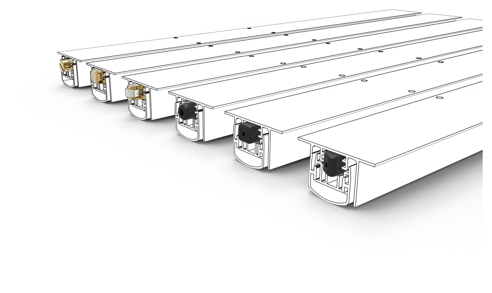

Paraspifferi automatici a soglia mobile
Il cuore della gamma: 81 codici in due linee, con guarnizioni autoestinguenti, per porte interne, blindate, portoncini in legno, porte in alluminio, PVC e acciaio, anche con camera europea.
| Caratteristica | Master | Standard |
|---|---|---|
| Guarnizione | Silicone | PVC |
| Tagliafuoco | Adatta | No |
| Sezioni | 11 misure | 6 misure |
| Lunghezza max | 1800 mm | 1500 mm |
| Codici | 56 | 25 |